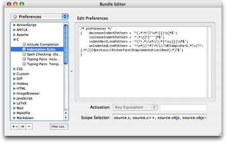

Normally TextMate presents settings and such using a GUI, but for the language grammars and preferences items it exposes you to the old-style property list format.
For the purposes of TextMate this format has 3 data types which are described below. Notice that the escape rules for strings have been changed slightly compared to Apple's official format. This was done to make the language grammars more readable, since these need a lot of literal escape characters.
The basic type is a string which can be either single or double quoted.
When the string is single quoted, all characters are verbatim. If you need to put a ' inside a single quoted string, you need to use two, for example:
'Normal string' => Normal string
'That''s an apostrophe' => That's an apostrophe
'String with \backslash' => String with \backslash
As you can see, the only interpretation which happens is to convert any occurrence of '' to a single '.
Double quoted strings do support escape sequences, apart from \" and \\. For example:
"Normal string" => Normal string
"Some \"quoted\" text" => Some "quoted" text
"Literal \escape" => Literal \escape
"Escaped \\escape" => Escaped \escape
"Two \\\escapes" => Two \\escapes
When a string consists entirely of letters, underscores and dashes, it is possible to omit the quotes. For example the following are all legal strings:
foreground-color
this_is_a_string
justLettersInThisOne
Arrays are collections of elements, each element can be another array, a string or a dictionary. Elements are comma separated and the entire list is enclosed in parentheses. Some examples:
( "foo", "bar", "fud" )
( "nested", ( "array", "in" ), "array" )
It is allowable to put a comma after the last element, like this:
( "foo", "bar", "fud", )
Dictionaries associate a value with a name (key). They are also known as maps, hashes, associative arrays and probably go under a few other terms as well.
The structure is: { «key» = «value»; } here «key» is a string and «value» can be either an array, string or another dictionary. Some examples:
{ color = "black"; }
{ colors = ( "red", "green", "blue" ); }
Source code and structured text generally have indentation conventions. TextMate can help you with these if you tell it when to increase and decrease the indent.
Having TextMate figure out the proper indentation is useful when you paste text in another part of the source (where the indentation is different), when you press return on a line that affects the indentation (for next line), or when you press tab at the beginning of the line (and want as much indentation as appropriate for that line).
Some languages go a little beyond a single character/keyword to increase and another to decrease, so TextMate has four (regexp) patterns you can set to tell it about your indentation conventions.
The patterns should be set in the Bundle Editor and are set as preference items with the scope set to the scope for which you want the rules to apply (e.g. source.c++).

We will use the following code example to explain the four patterns:
1 int main (int argc, char const* argv[])
2 {
3 while(true)
4 {
5 if(something())
6 break;
7 #if 0
8 play_awful_music();
9 #else
10 play_nice_music();
11 #endif
12 }
13 return 0;
14 }
The increaseIndentPattern should match the lines which increase the indent. In our example above, this is the { characters at lines 2 and 4 (the if on line 5 will be discussed later).
The simple preference for this pattern would be:
increaseIndentPattern = '\{';
However, since we could have code like this:
int arr[] = { 1, 2, 3 };
or
str = "foo {";
we need to make it a little more complicated, by ensuring that no }, " or ' will follow the { on the same line. A good choice for languages which use the bracket to start a block would be:
increaseIndentPattern = "^.*\{[^}\"']*$";
The decreaseIndentPattern should match the counterpart of our increase indent pattern. In our example the indent is increased by lines 12 and 14. The character here is } and so the simple decrease indent pattern would be setup as:
decreaseIndentPattern = '\}';
the more complex version may allow only comment end markers in front of the } and whitespace or ; after the }, so with that in mind, we extend the pattern to:
decreaseIndentPattern = '^(.*\*/)?\s*\}[;\s]*$';
We ignored line 5 in the increase indent pattern, that is because it does not really increase the indent, it only causes the next line to be indented if a block is not started.
For this situation there is the indentNextLinePattern, which should match these lines. We could make it something like:
indentNextLinePattern = 'if|while|for|switch|…';
But generally in C-like languages, all lines not terminated with a semi-colon (or ending with starting a block), cause the next line to be indented. This is (with most conventions) also the case when manually breaking one expression into several lines, e.g.:
some_function(argument1,
argument2,
argument3);
more_code;
So instead of explicitly matching known language constructs which have the next line indented, we simply match all lines which are not terminated with a semi-colon or brackets. One thing to remember is single-line comments like this:
some_function(arg); // this is terminated
To solve that, we start with a negative look-ahead assertion in this case and then go on to match lines not terminated by any of the characters mentioned above. The pattern ends up as:
indentNextLinePattern = '^(?!.*;\s*//).*[^\s;{}]\s*$';
Sometimes we have lines which are outside the normal indent, or does not affect the indent despite matching our rather general indentNextLinePattern. In our example these are the preprocessor lines (line 7, 9 and, 11).
To tell TextMate about these lines, there is an unIndentedLinePattern rule. Another case to avoid might be something like this:
1 some_function();
2
3 /* ignore_first();
4 ignore_second();
5 */
6 more_functions();
Here line 3 and 5 would count as having zero indent, so we want to ignore these.
To instruct it to ignore preprocessor lines, lines with leading comments or a few Objective-C directives (which are not terminated by a semi-colon), we can use this pattern:
unIndentedLinePattern =
'^\s*((/\*|\*/\s*$|//|#|@interface|@implementation|@end).*)?$';
When launched, TextMate loads plug-ins located in ~/Library/Application Support/TextMate/PlugIns. The plug-in should be a normal Objective-C bundle with a principal class which will receive an initWithPlugInController: when instantiated.
There is a sample plug-in here. Though other than the startup message, TextMate does not offer any API for the plug-in to use (but will likely do so in the future).
If you are interested in developing plug-ins for TextMate, you can subscribe to the plug-ins mailing list.